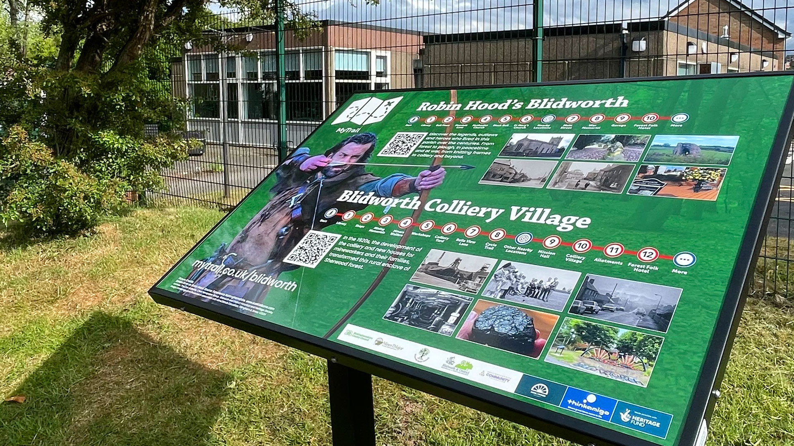

Legend and Legacy
Two new digital heritage trails for mobile devices
Featuring Robin Hood's Blidworth and the colliery village. Visitors can scan the QR code on the branded interpretation board located outside the village library, providing access to both trails.